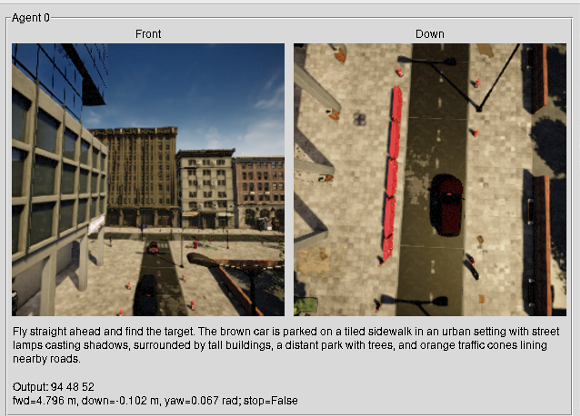

具身导航
无人机VLN-视觉语言导航与连续控制系统
复现无人机视觉语言动作系统，贯通双视角感知、动态方向提示与连续控制。
开源项目复现
技术实践
- 基于 OpenVLA-7B 搭建无人机视觉语言动作系统，完成多视角感知、指令理解、连续动作预测与仿真执行的闭环流程；
- 设计前视与下视双视角输入，结合位置、姿态及目标方位构建动态方向提示，实现目标描述与视觉观测的联合条件建模；
- 基于LoRA微调语言模型并训练视觉投影模块，将前进、升降及偏航动作量化为99档文本编码，引入停止标记实现导航终止；
- 基于AirSim搭建评估流程，完成动作解码、坐标转换、碰撞监测及轨迹记录，在已见场景、未见目标与未见地图下统计SR、SPL。
项目图片

项目来源
个人角色为 AeroVLA 开源项目复现。原项目作者为 Peng Xu、Zhengnan Deng、Jiayan Deng、Zonghua Gu、Shaohua Wan。